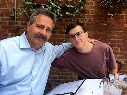
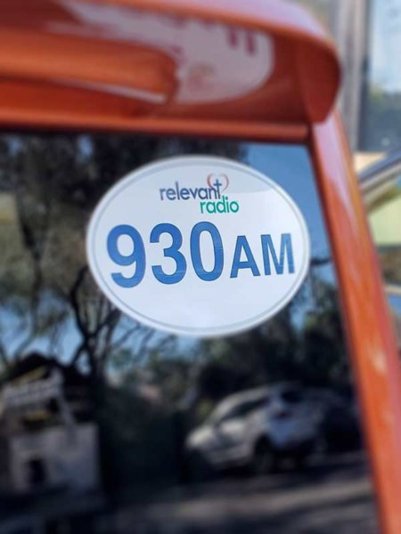

Patrick Madrid has played an important role in my life, and has helped me form myself into the kind of man I am today . I began listening to Patrick Madrid religiously during my first job out of college as a civil engineer. During my 30-minute commute to work he would be on, and after the first few months of my job I soon got tired of listening to my music on my drives and so I switched over to him.
His show always gave me food for thought and that, mixed in with the humor between him and his co-host Cyrus, was a delight to my rather mundane mornings. I soon started listening to other shows on Relevant Radio as well, and them likewise also added brightness to my days and gave me things to think about, while influencing the way I live my life.
One significant moment that I can say Patrick Madrid has had a positive influence in my life is when my father was scheduled for heart surgery. Drawing up to the days of the surgery, I, along with my other family members were growing increasingly nervous for my dad, knowing there was a small but significant possibility of him not surviving the surgery. Every day coming home from work, I would listen to the Family Rosary Across America on Relevant Radio and hear people in similar situations make pray requests for their loved ones. With my new association and obsession for Relevant Radio, I felt as if it would be a waste of me not to use this opportunity to see if I could get a prayer request for my dad read on air. I sent a request maybe five times during the two weeks before the surgery and on the day before the surgery was had, my prayer request was read and my dad had tens of thousands of people across America praying for him.
My dad did in fact survive the surgery and had an actually relatively quick recovery. I have no doubt that the prayers helped in this and I’m thankful for Patrick Madrid for getting me hooked on Relevant Radio in the first place and making all of this a possibility. Today, I own one of his books,
His show always gave me food for thought and that, mixed in with the humor between him and his co-host Cyrus, was a delight to my rather mundane mornings. I soon started listening to other shows on Relevant Radio as well, and them likewise also added brightness to my days and gave me things to think about, while influencing the way I live my life.
One significant moment that I can say Patrick Madrid has had a positive influence in my life is when my father was scheduled for heart surgery. Drawing up to the days of the surgery, I, along with my other family members were growing increasingly nervous for my dad, knowing there was a small but significant possibility of him not surviving the surgery. Every day coming home from work, I would listen to the Family Rosary Across America on Relevant Radio and hear people in similar situations make pray requests for their loved ones. With my new association and obsession for Relevant Radio, I felt as if it would be a waste of me not to use this opportunity to see if I could get a prayer request for my dad read on air. I sent a request maybe five times during the two weeks before the surgery and on the day before the surgery was had, my prayer request was read and my dad had tens of thousands of people across America praying for him.
My dad did in fact survive the surgery and had an actually relatively quick recovery. I have no doubt that the prayers helped in this and I’m thankful for Patrick Madrid for getting me hooked on Relevant Radio in the first place and making all of this a possibility. Today, I own one of his books,
InQUIZition
, and I support a Relevant Radio bumper sticker on my car.

